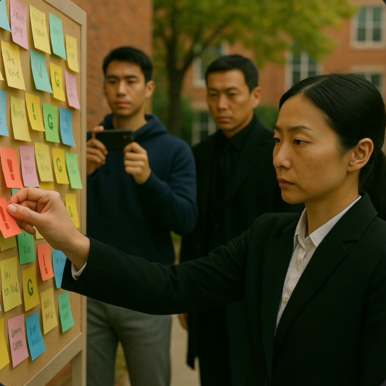

Lorre reappeared but made no speech, merely observing the scene quietly. Jack took the photos and Verta continued to label them.
Rose stepped forward and questioned Lorre whether he interfered with the students' privacy
Jack pulled Verta and whispered, "What on earth is he waiting for?"
Rose bravely posts a handwritten note revealing her emotional struggle.